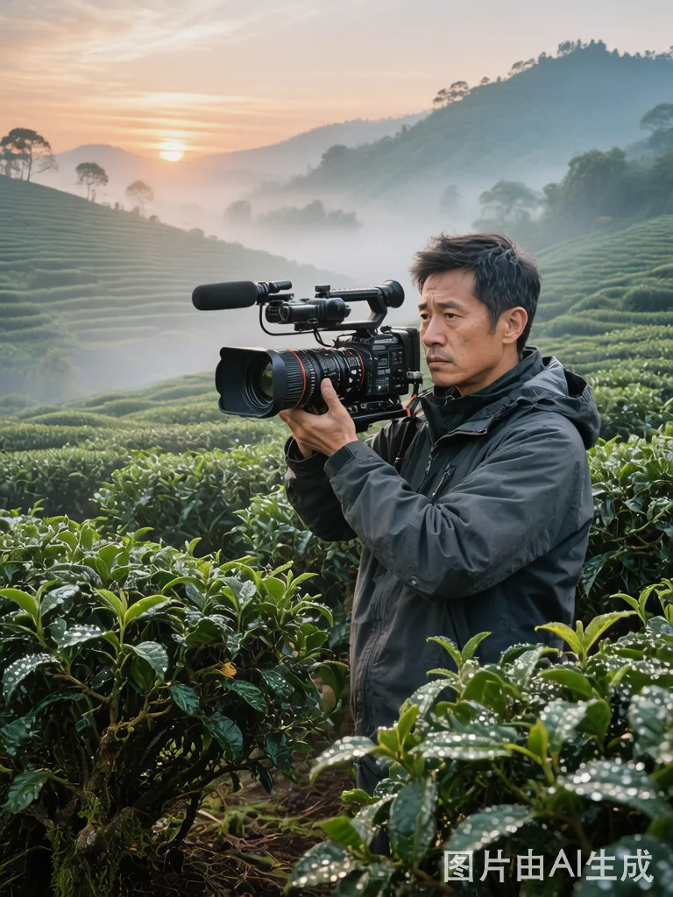
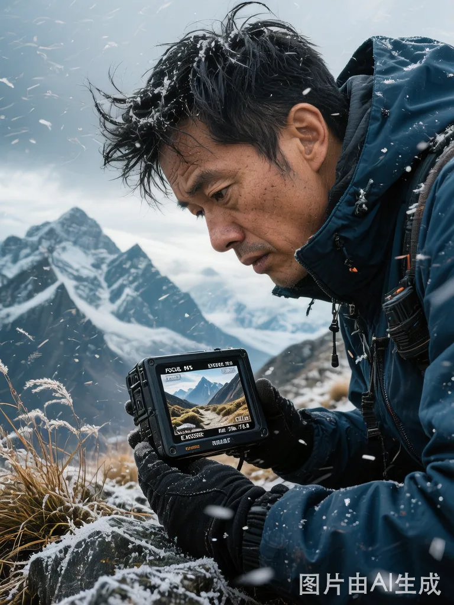
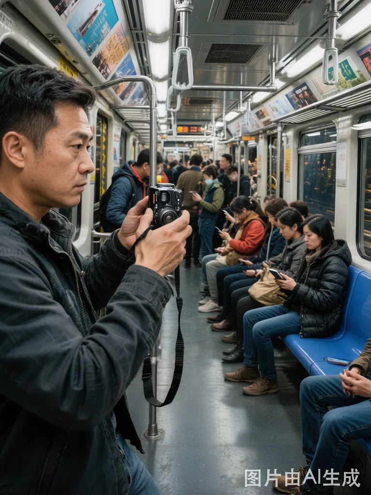

登山路 · 影像创作
作品
视频
关于
0:00 / 4:32
在梅里雪山，我等了三天的日照金山
在梅里雪山，我等了三天的日照金山
旅行影像
时长 4:32
2028 / 11
器材 Sony FX6 + DJI Mavic 3
#风光 #登山 #调色

2028年深秋，我在飞来寺驻扎了十二天。前六天，卡瓦格博全程被云雾笼罩，每天早上五点爬起来架机器，在零下十五度的观景台等到九点，然后收工。
第七天清晨 6:47，第一缕光线触到峰顶。金色从峰顶开始往下流淌，像有人从天上倾倒融化的黄金。那两分十七秒，摄影指导老徐说是他从业二十年最幸运的三分钟。
我接这个案子的原因很简单：传统的风光片看了100部等于看了1部。
观众知道雪山很美，但不会觉得自己和它有什么关系。
所以我放弃了上帝视角——镜头高度保持在1.6米，手持微晃但不抖。
不追求完美构图，追求那种"我正走在这条路上"的沉浸感。

后期在 DaVinci Resolve 中完成。高光暖金色，阴影偏冷蓝。暗部保留细节而非压黑，让雪山有"发光"感而非"被打光"感。
Credits
制作名单
导演 / 摄影 / 剪辑
登山路
摄影指导
老徐
调色
登山路
委托方
迪庆州文化和旅游局
Related
相关作品
城市之巅
城市之巅
宣传片
贡嘎转山
贡嘎转山
旅行
川西14天
川西14天
旅行
非遗·竹编
非遗·竹编
纪实
↓ 照片作品页布局 ↓
街拍 / Photography · 2028 / 04 · 广州
花间集
Gallery
组图
组图 1
组图 2
组图 3
组图 4
组图 5
组图 6
组图 7
组图 8
广州岭南花卉市场。
这里凌晨三点就开始忙碌——花农、批发商、花店老板、婚礼策划师，
各色人物在潮湿的空气中穿梭。
我在这里蹲了三个凌晨，记录了花与人最真实的交汇瞬间。
日期
2028 / 04
地点
广州
器材
Leica M10-P
镜头
Summilux 35mm f/1.4
#街拍
#纪实
#黑白
#光影
Behind the Scenes
幕后

Credits
制作名单
摄影 / 后期
登山路
More
更多照片
潮汐画布
潮汐画布
风光
若尔盖的清晨
若尔盖的清晨
风光
街巷光影
街巷光影
街拍
建筑的诗学
建筑的诗学
建筑